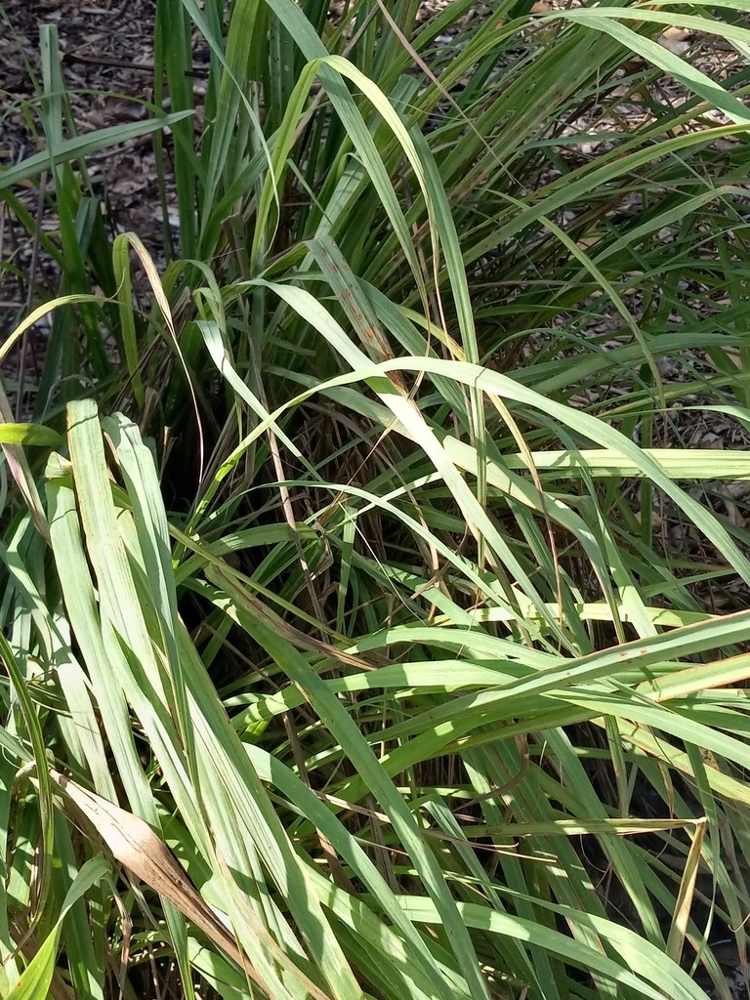

- Beekeepers use lemongrass oil in swarm traps to lure honeybee scouts. The oil mimics the Nasonov pheromone worker bees use to signal a good new home — which means this clump of grass is, chemically speaking, speaking bee.
- The scent that makes lemongrass so recognizable in the kitchen comes almost entirely from a single compound — citral — which makes up 65 to 85 percent of the plant's essential oil. Citral is also a starting material for synthesizing ionones, which are used in turn to manufacture vitamin A.
- Lemongrass almost never flowers or sets viable seed in cultivation. Every plant you have ever bought at a nursery or grocery store was almost certainly propagated by division — a rooted cutting or a separated tiller from a mother clump.
- The plant has two culinary identities: the lower, pale bulb-like stem base is sliced or pounded for pastes and soups, while the leaves are bruised and steeped as an aromatic in teas and broths — removed before eating, the way a bay leaf is.
Lemongrass is native to the wet tropical grasslands and open woodlands of southern India and Sri Lanka, where it thrives in warm, monsoon-influenced conditions from sea level to roughly 2955 feet.
Kew's Plants of the World Online treats that core range as the species' homeland, though some authorities extend the native range into maritime Southeast Asia — Indonesia, Malaysia, and the Philippines — where the plant has been cultivated and semi-wild for so long that the line between native and naturalized blurred centuries ago.
After World War I, commercial cultivation spread rapidly to Madagascar, Central America, and South America. It reached Florida through the horticultural and culinary trades and is today a fixture in Florida herb gardens, thriving as a near-permanent perennial in the warmest parts of the state.
- The genus name Cymbopogon comes from the Greek kymbe, meaning 'boat,' and pogon, meaning 'beard' — a reference to the hairy spikelets that project from boat-shaped leaf-like bracts (spathes) in the inflorescences. The species name citratus simply notes its citrus-like scent.
- For centuries, traditional medicine systems across Asia, Africa, and the Caribbean have drawn on lemongrass for fevers, digestive complaints, and respiratory ailments — the common name 'fever grass' still used in Jamaica reflects that history directly.
- The U.S. FDA has declared lemongrass essential oil generally recognized as safe (GRAS) as a food flavoring, grounding the plant's long culinary reputation in modern regulatory standing.
- Lemongrass is also a significant industrial crop. The essential oil is extracted commercially by steam distillation of the leaves and used in perfumes, soaps, cosmetics, and insect repellents. The citral it yields serves as a raw material for synthesizing other aroma compounds and for producing beta-ionone, a precursor to vitamin A.
Lemongrass has modest direct wildlife value in a Florida garden setting. It rarely flowers in cultivation, and when it does, the wind-pollinated spikelets provide little in the way of nectar or pollen for bees or butterflies. The dense clumps do offer shelter, and the fibrous base provides nesting material opportunities for small animals.
One documented connection to pollinators is indirect but charming: beekeepers use lemongrass essential oil in swarm-capture traps because it closely mimics the Nasonov pheromone that honeybee scouts use to recruit a swarm to a new home. The same chemistry that makes the plant appealing in the kitchen turns out to speak directly to honeybees.
Lemongrass is propagated almost exclusively by division. A mature clump builds over time into 50 to 200 individual tillers; rooted sections about 4 to 6 inches long can be separated from the mother plant and planted directly. Fresh stalks purchased at an Asian grocery store — as long as a small rooting node is intact — will root in a glass of water in about two weeks and can then be planted.
Lemongrass rarely flowers in cultivation outside the tropics, and seed propagation is considered inefficient because viable seed is seldom produced. When flowering does occur, the inflorescences are long, nodding, branched structures bearing small wind-pollinated spikelets subtended by boat-shaped bracts. They are not ornamentally showy.
The plant grows as a dense, arching clump of linear, blue-green to pale green leaves 18 to 36 inches long and up to roughly one inch wide, with rough edges and a prominent midrib. The base of each shoot is a tightly wrapped, pale white-to-green sheath — slightly bulbous in appearance — that is the part used in cooking.
Crush any part of the leaf and the citral-rich essential oil releases immediately as a sharp, clean lemon scent.
When you find this clump, engage all your senses — this is one of the park's most hands-on plants.
Start with the overall form: a dense, fountain-like spray of long arching leaves rising from a tight central base. Crouch down and look at where the leaves meet the ground: the lower sheaths are pale greenish-white, sometimes with a faint purple tinge at the very base, and tightly wrapped around each other like a small bulb.
Watch the leaf edges — they are finely serrated and can nick unaware fingers, so pinch a blade gently in the middle, not along the edge, and bring your fingers to your nose: the citral-rich oil releases immediately as a sharp, clean burst of lemon.
If the plant is mature enough to have flowered, look for a nodding, multi-branched stalk rising from the center — though in Florida gardens, you may never see one.
The ASPCA lists lemongrass as toxic to dogs, cats, and horses, with essential oils and cyanogenic glycosides as the toxic principles; stomach upset is the most common sign in dogs and cats, and a significant quantity must be ingested to cause serious harm. Keep pets from grazing on the clump and contact a veterinarian if a dog or cat eats a meaningful amount.
For people, the plant and its culinary uses are well established and safe — lemongrass essential oil is FDA-recognized as safe in food. The one handling caution: the leaf edges are finely serrated and can deliver a paper-cut-style nick, so wear thin gloves when dividing or cutting back a large clump.
Two species are sold and used as 'lemongrass': West Indian lemongrass (Cymbopogon citratus, this plant) and East Indian lemongrass (Cymbopogon flexuosus). Both are used interchangeably in cooking, though C. citratus is generally considered superior for culinary use and is the form most commonly found in Florida gardens and markets.
A stalk of lemongrass purchased at an Asian grocery store — roots attached or not — can often be coaxed to root in a glass of water and grown on. It is one of the more accessible 'grocery store to garden' plants, which partly explains how widely it has spread through home gardens across the tropics.
When harvesting for the kitchen, peel away and discard the tough outer sheaths to reach the pale, tender inner stalk — this is the part you slice or pound. The upper green leaves are best bruised and simmered whole in soups or teas, then removed before serving; their edges are sharply serrated, so use a knife rather than tearing by hand.


- © teschaim (CC-BY-NC), via iNaturalist